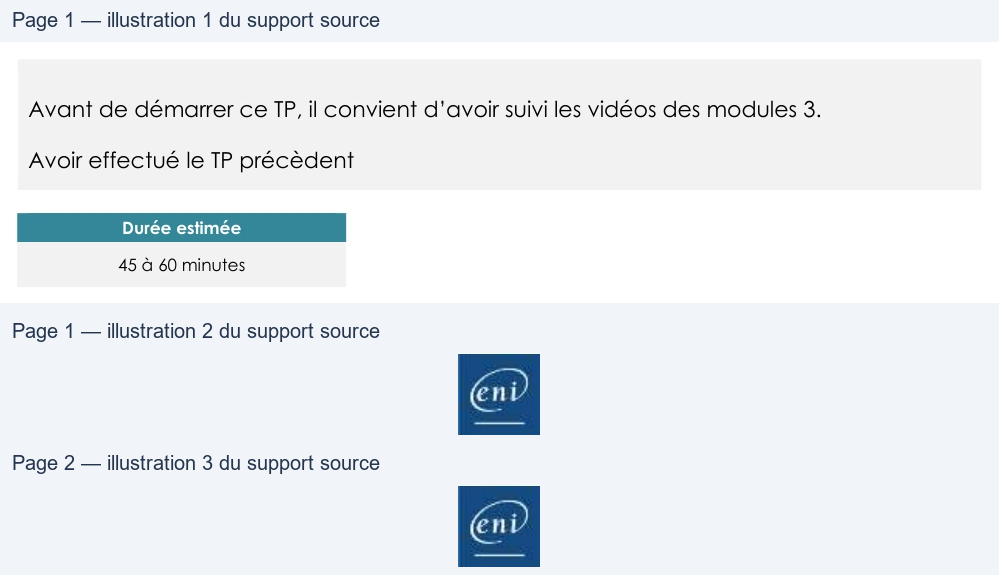

Transcription du document du Drive TSSR. La mise en forme est adaptée au Web ; les compléments IA du portail sont présentés séparément.
Premières commandes
TP du Module 03 – Découverte du shell et premières commandes
Avant de démarrer ce TP, il convient d’avoir suivi les vidéos des modules 3.
Avoir effectué le TP précèdent
Durée estimée
45 à 60 minutes
En fonction du modules que vous venez de parcourir, vous trouverez les commandes
nécessaires pour répondre aux questions.
1. Changer votre mot de passe, fermer la session et reconnectez-vous pour
vérifier le changement de mot de passe.
....................................................................................................................................
....................................................................................................................................
2. Depuis quand êtes-vous connecté ?
....................................................................................................................................
....................................................................................................................................
3. Quels sont les utilisateurs qui travaillent sur le serveur ?
....................................................................................................................................
....................................................................................................................................
4. Quel est le temps d'inactivité des utilisateurs connectés ?
....................................................................................................................................
....................................................................................................................................
5. Quel est le numéro de processus de votre session ?
....................................................................................................................................
Page 1/2
© ENI – Tous droits réservés
BE
Premières commandes
....................................................................................................................................
6. Afficher vos identifiants d'utilisateur et de groupes (UID et GID) et relevez les
noms de vos groupes d’appartenance.
....................................................................................................................................
....................................................................................................................................
7. A l'invite de commande, afficher juste l’heure.
....................................................................................................................................
....................................................................................................................................
8. A l'invite, afficher juste la date, suivant l'exemple : lundi 24 septembre 2009
....................................................................................................................................
....................................................................................................................................
9. Commande cal avec et sans argument :
a. Afficher le calendrier de Janvier 1900 puis celui de toute l’année.
....................................................................................................................................
....................................................................................................................................
b. Afficher le calendrier du mois de Janvier de l'année courante.
....................................................................................................................................
....................................................................................................................................
c. Afficher le calendrier de septembre 1752, quelle est la particularité de
ce mois ?
....................................................................................................................................
....................................................................................................................................
Une solution est proposée pour ce TP sous la forme d'un PDF commenté, disponible dans les
ressources à télécharger.
Page 2/2
© ENI – Tous droits réservés
